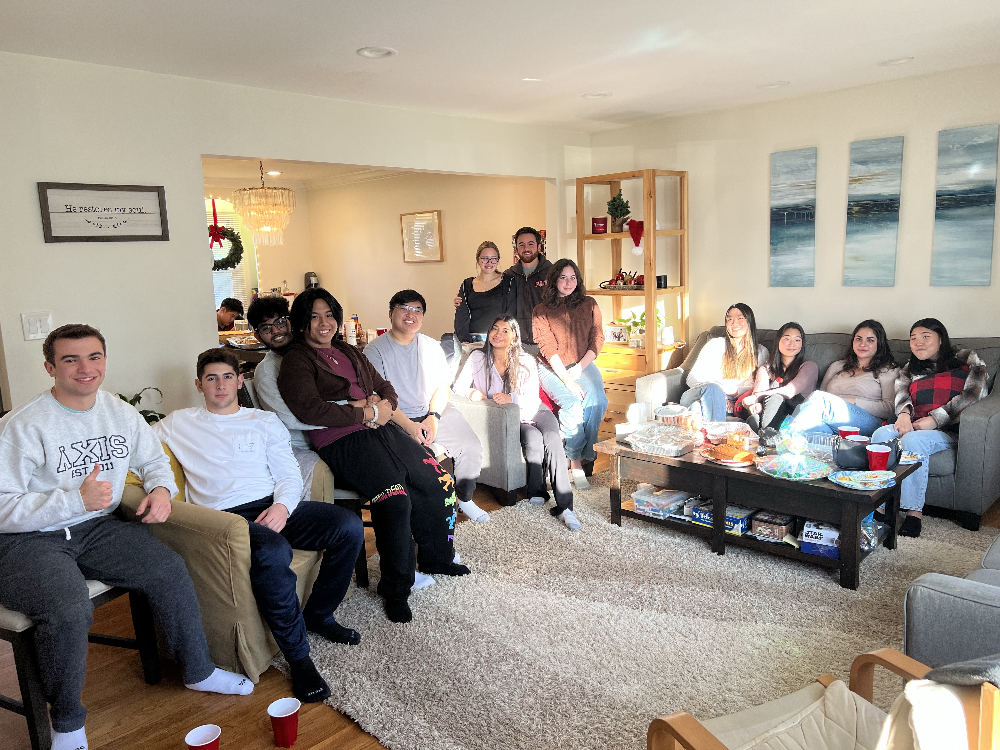

I can't say I know what I'm gonna write about right now, but I do feel like there is something to be written about. Hey, maybe that's always the case, I don't know. Regardless, excuse the messy post but this is what it is.
It's a weird feeling I have right now. It's a mix of nostalgia, love for home, loving my friends and also missing my new home, being grateful for my new friends, and growing past this cycle I'm in. There's a lot to unpack there. First of all, I'm home and I know that for a fact. I know that because I see my family in my house, I drive my car down the streets of my town, I hang out with my friends in our go-to spots. I'm home. It seems very obvious and it doesn't feel like that statement needs to be made yet here I am. I guess I'm trying to make sure in my mind I really am home. Maybe it's because I'm here and all of this feels familiar, but at the same time it's not the same as it used to be. It's just different.
For me, familiar right now feels like waking up in my dorm and cracking open the blinds because I wanna see the sun, it's eating that same Domino's pizza every Thursday night during bible study, it's going down to the Butler Basement and finding the people I love seeing. But at the same time, I don't think being familiar necessarily makes it a home. (Think someday I'll have nostalgia over those things?) It's just a different.
I've been hanging out with my old high school friends a lot these days and gosh I missed them so much. It's hard to describe, but it feels good to talk and laugh about things I haven't even thought about in months. There's this level of freedom I haven't felt with college friends. I think it's because I've made a life with these people and it's a life that college has only gotten to see the result of. My hometown friends and I have gotten to know each other in the most formative years of our lives and no one really replaces that. But the thing is, now that I am back it kind of feels like I'm frozen in time. Of course we've changed and grown but we fall back into our same roles and dynamics as a group and I also don't know how I feel about that. It's just different.
Reading all of that over, it doesn't really make sense but what I'm trying to say is home doesn't feel like home. But college also doesn't feel like it either. So then what's changed?
I think I'm starting to realize something—I'm growing up. Gasp. But this realization really does explain a lot of things. As nice as it feels to be back, I can't ever truly be back because I'm simply a different person than I was before. I'm realizing now the reason I feel upset about not feeling the same as I did a few months ago is because I'm forcing myself to be who I was a few months ago, and that's just not me anymore. Ultimately, I'm doing all the things I used to and wanting the same results I got then. It all feels like wearing clothes that I've grown out of. And that makes me upset. I love those clothes.
Ok, I change my mind. Clothes is a bad analogy because people throw out their old clothes and that makes me big upset because that's not what I want. New analogy: a plant that has outgrown the pot it's currently in. That's so fire. Check it, the plant needed the smaller pot to receive its nutrients, water, and whatever else plants need. But as it grows and gets too big, it takes the lessons it's learned, the friendships, the love of the past season into its next pot. It doesn't leave them but just carries them over into a new space where there is a greater capacity for growth. That is the difference. Growing up is realizing I have different wants and different needs than I did before, and that's ok. I can still take what I learned and bring the people I love into wherever I'm going next. It'll just look different. Which is good because I am different.
So this is getting long and was all over the place but at least I feel better. It's good to know there seems to be a reason for this tension I'm feeling. Honestly, I'm just glad I can tackle this part of my life with intentionality. I don't have to feel bad about what's different because my heart just craves different things. Maybe that's the whole thing of growing up, it's not necessarily that life changes a crazy amount but it's your heart that grows and you just have to follow it. If that's the case, I'm looking forward to where it's leading me.
home & growth
